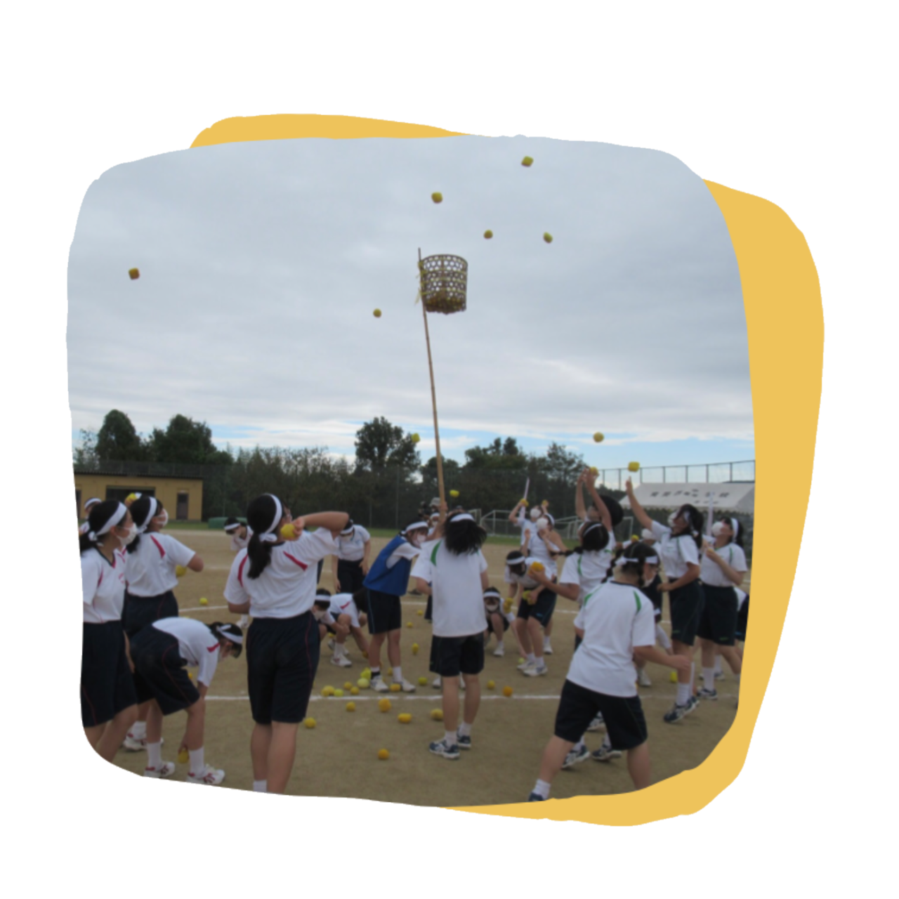
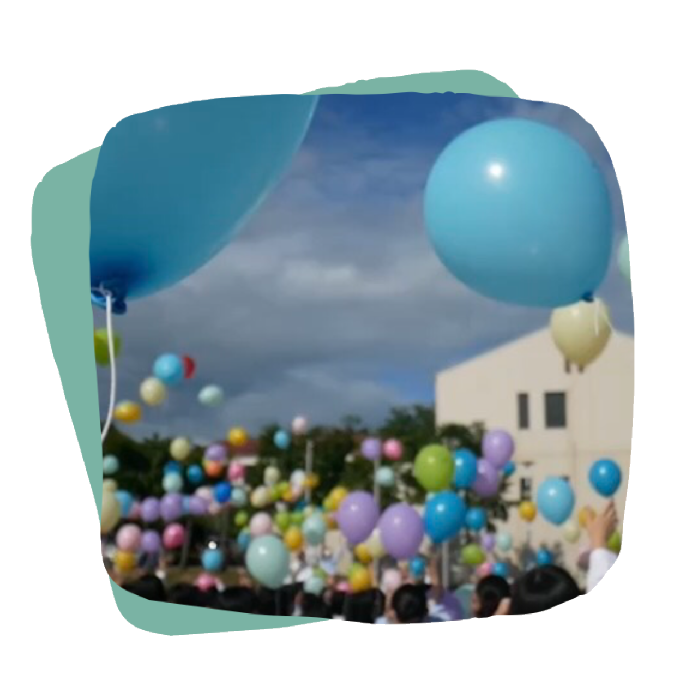
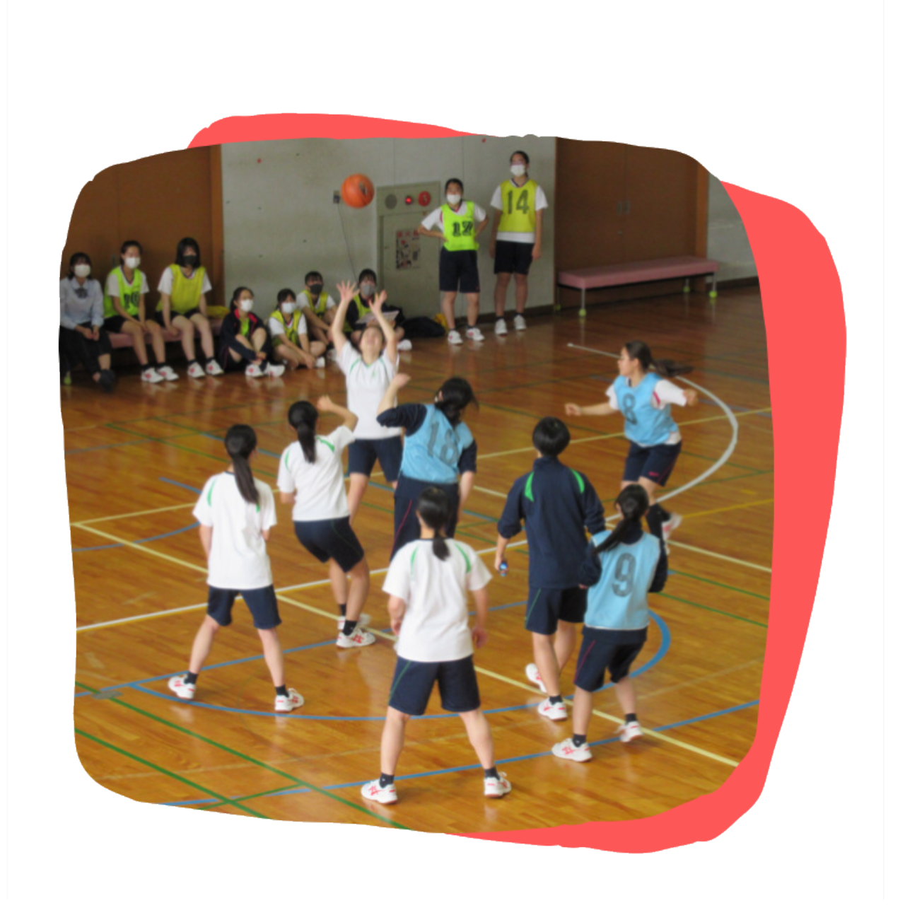
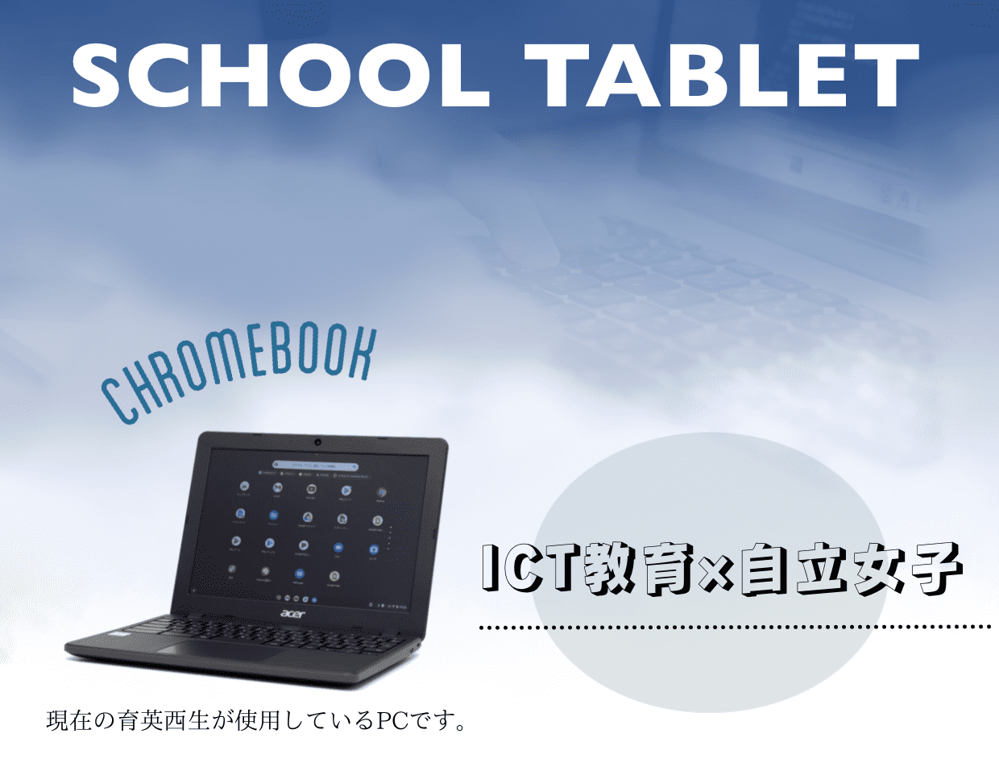

May

西校祭体育行事
みんなが全力で行う体育祭は女子校ならではの楽しさがあります。
特にクラス対抗リレーでは、体育の授業内で一生懸命練習して各クラスが1位を目指して頑張ります。
応援グッズをもって応援でき、学年クラス関係なく盛り上がります。
September

西校祭文化行事
文化祭は2日間あり、1日目は舞台発表で2日目は屋台や展示を行います。
コロナ期間では、体育館で舞台発表を行いZOOMでの中継でしたが、通常は大ホールに行き発表ができます。
屋台では、高校生は食べ物・中学生はポスターセッションや縁日などができます。
October

球技大会
中学生はバレーボール、高校生はバレーボールとバスケットボールの選択があります。
体育の授業で練習を行い球技大会に挑みます。生徒が一番楽しみにしているのが全ての試合が
終了した後に行われる先生同士の対決です。普段とは違った姿を見ることができとても面白いです。

